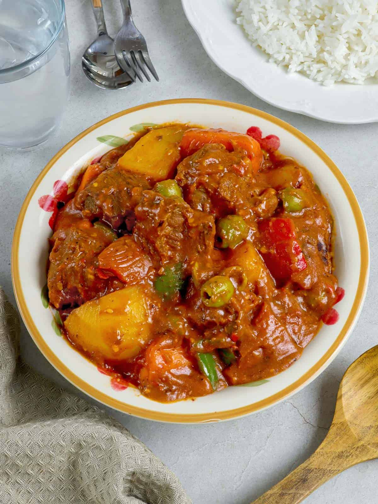

ADOBO
|

|
Adobo is one of the most beloved and iconic dishes in Filipino cuisine, celebrated for its rich, savory flavor and comforting aroma. Traditionally made with either chicken, pork, or a combination of both, the meat is marinated and simmered in a flavorful blend of soy sauce, vinegar, garlic, bay leaves, and black peppercorns. The result is a tender, juicy dish with a perfect balance of salty, tangy, and slightly sweet notes. Each bite captures the essence of Filipino home cooking — simple ingredients transformed into something deeply satisfying.
While adobo has countless regional and family variations, its core flavor profile remains unmistakable. Some households prefer a saucy version best paired with steaming white rice, while others cook it until the sauce reduces into a caramelized glaze that coats the meat. Ingredients like coconut milk, potatoes, or even hard-boiled eggs are sometimes added to create unique twists. Regardless of the style, adobo’s adaptability and depth of flavor make it a staple on Filipino tables, from everyday meals to festive gatherings.
Beyond its taste, adobo holds cultural significance as a symbol of Filipino resilience and creativity. The dish’s vinegar-based cooking method acts as a natural preservative, reflecting how early Filipinos ingeniously adapted to tropical conditions. Over time, adobo has evolved into more than just a meal — it’s a culinary tradition that connects generations, telling the story of the Philippines through every flavorful spoonful.
Ingredients:
|
tbsp canola oil
6 cloves garlic crushed
1 pc onion, sliced
1 kilogram chicken cut ups
2 tbsp vinegar
1/4 cup soy sauce
1 cup water
2 pcs bay leaves
1 tsp whole black peppercorns, slightly crushed
2 pc Knorr chicken cubes
1 tsp brown sugar packed
Optional: 1 cup kale or spinach
|
Here are short and simple steps to cook Filipino Adobo:
1. Marinate – In a bowl, combine chicken or pork with soy sauce, vinegar, garlic, bay leaves, and peppercorns.
Let it sit for at least 30 minutes.
2. Sauté – In a pot, heat a little oil and sauté garlic and onions (optional) until fragrant.
3. Add Meat – Put in the marinated meat and cook until it starts to brown.
4. Simmer – Pour in the remaining marinade and add water. Cover and simmer until the meat becomes tender.
5. Season & Reduce – Adjust seasoning with salt or sugar if needed. Let the sauce reduce to your preferred thickness.
6. Serve – Serve hot with steamed rice.
|
SINIGANG
|
|
Sinigang is a classic Filipino soup known for its signature sour and savory flavor that perfectly captures the Filipino love for comfort food. Typically made with pork, shrimp, beef, or fish, sinigang gets its distinct tanginess from tamarind, though other souring agents like green mango, calamansi, or kamias can also be used. The meat or seafood is simmered with fresh vegetables such as kangkong (water spinach), sitaw (string beans), radish, eggplant, and tomatoes, creating a hearty and flavorful broth that’s both refreshing and filling.
Each bowl of sinigang offers a comforting balance of flavors — the sourness whets the appetite, while the savory broth and tender ingredients make it deeply satisfying. It’s often enjoyed with steamed rice, where the tangy soup seeps in and enhances every bite. Different regions in the Philippines have their own versions of sinigang, ranging from the classic pork sinigang sa sampalok (tamarind) to sinigang sa miso (with soybean paste) or sinigang sa bayabas (with guava), showcasing the dish’s versatility and the creativity of Filipino cooking.
More than just a meal, sinigang is a symbol of warmth and togetherness in Filipino households. It’s the kind of dish that brings families around the table, especially on rainy days or cool evenings. With its comforting broth and familiar sour taste, sinigang continues to be a beloved staple — a dish that speaks of home, tradition, and the heart of Filipino cuisine.
Ingredients:
|
4¼ cups water
2 cups pork spare rib cut into chunks
1 pc red onion, quartered
2 pcs medium sized tomato, quartered
8 pcs sitaw, sliced into 2” pieces
250 g kangkong stalk and leaves
1 pc talong, sliced
2 pcs siling pangsigang
1 (20g) pack Knorr Sinigang sa Sampalok Mix Original
Optional: labanos, okra
|
Here are short and simple steps to cook Filipino Adobo:
1. Boil Meat – In a pot, boil pork, beef, or shrimp until tender. Skim off any scum that forms on top.
2. Add Tomatoes & Onions – Add chopped tomatoes and onions to the pot for flavor.
3. Add Vegetables – Put in vegetables like radish, eggplant, kangkong (water spinach), and string beans.
4. Season with Tamarind – Add tamarind mix or fresh tamarind juice to make the broth sour.
Adjust the level of sourness to taste.
5. Add Fish Sauce & Seasonings – Season with fish sauce, salt, and pepper.
6. Serve Hot – Serve with steamed rice and enjoy the warm, tangy soup.
|
BEEF KALDERETA
|

|
Beef Kaldereta is a rich and hearty Filipino stew that perfectly blends savory, tangy, and slightly spicy flavors. Traditionally made with tender chunks of beef slow-cooked in tomato sauce, it’s a comforting dish often served during celebrations or family gatherings. The addition of potatoes, carrots, and bell peppers gives the dish texture and color, while the tomato-based sauce creates a deep, flavorful base that coats every ingredient beautifully.
What sets kaldereta apart from other Filipino stews is its creamy and slightly luxurious taste, thanks to the addition of liver spread or pâté. This ingredient enriches the sauce, giving it a smooth, velvety texture and a distinct depth of flavor. Some versions also include cheese or green peas for an extra layer of indulgence. The balance of the beef’s savory richness, the vegetables’ sweetness, and the sauce’s mild tanginess make kaldereta a well-loved comfort food across generations.
Beyond its flavor, Beef Kaldereta represents Filipino creativity and adaptability in cooking. Influenced by Spanish cuisine, it has evolved into a uniquely Filipino dish that reflects both tradition and innovation. Served with steamed rice, kaldereta is more than just a stew — it’s a symbol of warmth, togetherness, and the joy of sharing good food with family and friends.
Ingredients:
|
1 kilogram beef kaldereta cut or shortribs
2 pcs onion, quartered
water, enough to cover meat
4 tbsp canola oil
1 pc onion, chopped
5 cloves garlic, chopped
1 small can liver spread
1 (70 g) pack tomato paste
2 pcs bay leaves
1 pc Knorr Beef Cube
4 pcs potatoes, peeled and cut into cubes
2 pcs carrots, peeled and cut into cubes
1 pc red bell pepper, deseeded and cubed
1/2 cup pitted green olives (optional)
1/2 cup quick-melt cheese, grated (optional)
|
Here are short and simple steps to cook Filipino Adobo:
1. Sauté Aromatics – In a pot, heat oil and sauté garlic and onions until fragrant.
2. Brown the Meat – Add beef (or goat/pork) and cook until lightly browned on all sides.
3. Add Tomato Sauce – Pour in tomato sauce and a bit of water or broth. Simmer until the meat becomes tender.
4. Add Vegetables – Stir in potatoes, carrots, and bell peppers. Cook until the vegetables are soft.
5. Season & Add Liver Spread – Mix in liver spread (for richness) and season with salt, pepper, and optional chili for spice.
6. Simmer & Serve – Let it simmer until the sauce thickens. Serve hot with steamed rice.
|